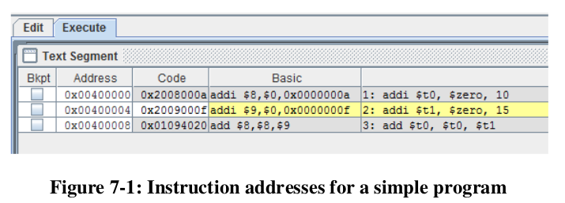

# if ((num > 0 && ((num%2) == 0)) {
# print("Number is positive and even")
# }
#
lw $t0, num # $t0 = num
sgt $t1, $t0, $zero # $t1 = $t0 > 0
rem $t2, $t0, 2 # $t2 = $t0 % 2
and $t1, $t1, $t2 # $t1 = $t1 & $t2
beqz $t1, end_if # branch to end_if if $t1 = 0 (skip next print statement)
la $a0, PosNum
jal PrintString
end_if:
jal Exit
.data
num: .word 5
PosNum: .asciiz "Number is Positive and even"
# if ((num > 0 && ((num%2) == 0)) {
# print("Number is positive and even")
# }
# else {
# print("Number is not positive and even")
# }
lw $t0, num # $t0 = num
sgt $t1, $t0, $zero # $t1 = $t0 > 0
rem $t2, $t0, 2 # $t2 = $t0 % 2
and $t1, $t1, $t2 # $t1 = $t1 & $t2
beqz $t1, else # branch to else if $t1 = 0 (skip next print statement)
la $a0, PosNum
jal PrintString
b end_if # go directly to end_if, skip else:
else:
la $a0, NegNum
jal PrintString
end_if:
jal Exit
.data
num: .word 5
PosNum: .asciiz "Number is Positive and even"
NegNum: .asciiz "Number is not Positive and Even"
# if ((num > 0 && ((num%2) == 0)) {
# print("Number is positive and even")
# }
# else if (num % 5 == 0) {
# print("Number is divis by 5")
# }
# else {
# print("Number is not positive and even or divis by 5")
# }
lw $t0, num # $t0 = num
sgt $t1, $t0, $zero # $t1 = $t0 > 0
rem $t2, $t0, 2 # $t2 = $t0 % 2
and $t1, $t1, $t2 # $t1 = $t1 & $t2
beqz $t1, test_divis_five # branch to next if statement if $t1 = 0 (skip next print statement)
la $a0, PosNum
jal PrintString
b end_if # go directly to end_if, skip else:
test_divis_five:
rem $t2, $t0, 5 # $t2 = $t0 % 5
bgtz $t2, else # branch > 0 to else ($t0 % 5 != 0)
la $a0, DivisFive
jal PrintString
b end_if # skip the final else block
else:
la $a0, NegNum
jal PrintString
end_if:
jal Exit
.data
num: .word 5
PosNum: .asciiz "Number is Positive and even"
NegNum: .asciiz "Number is not Positive and Even or divis by 5"
DivisFive: .asciiz "Number is divis by 5"
# while (num != -1)
# {
# num--;
# }
li $t0, -1
li $t1, 1
start_loop:
beq $t1, $t0, end_loop # if ($t1 = $t0 goto end_loop)
sub $t1, $t1, 1
b start_loop # goto start_loop (continue the while loop)
end_loop:
...
A label is a marker of a memory address within the binary code. The first program instruction is inserted at address 0x00400000
The program counter (pc) points to the NEXT instruction to execute, so branching accounts for this difference (4 bytes). Since each instruction is 4byte aligned, the first 2 bits of each instruction addr are always 00, so in the branch instruction these bits are not included and are implied, allowing for a wider range of possible branch locations (218 to be exact).
Branch instructions use an offset from the current PC, while jump instructions use absolute addresses. The Jump instruction (j) can access the entire .text segment (26 bits of address data). Branch instructions can to comparisons but are limited to 16 bits of address data.
Basically, use branching when code is inside the same file (if/loop statements); use jumping when the code is in a different file (subprograms)